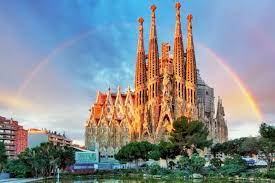
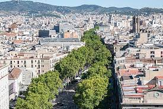

İspanya'da gezilecek yerler
Sagrada Familia Bazilikası
Sagrada Familia Bazilikası, Barselona’nın simgesi olmakla beraber en önemli yapısı ve Katalan mimar Antoni Gaudi’nin en büyük eseridir. Bu bina ilginç yapısı ile dünyadaki en alışılmadık tapınaklardan biri olmasıyla oldukça ilgi görmektedir. Bu nedenle bu görkemli bazilika şehre gidenler tarafından mutlaka görülmesi gereken yerlerden biridir.
Park Güell

Park Güell, çizgi filmlerden fırlamış gibi duran yapılarıyla Barselona’nın en ünlü ve en sıra dışı parkıdır. Bu eser de Antoni Gaudi tarafından yapılmış ve Sagrada Familia Bazalikası’ndan sonra yarattığı en önemli eseridir. Projede Park Güell’de ortak bahçeleri bulunan, 60 evden oluşan bir site meydana getirmek planlansa da yalnızca evlerden ikisinin birleştirilebilmesi sonucunda proje iptal edilmiş ve park 1922’den sonra halkın kullanımına açılmıştır.
La Rambla Caddesi
La Rambla Caddesi, Barselona’nın en önemli ve turistik caddelerinden biridir. Cadde Port Vell ve Plaça de Catalunya arasında yer alır. Cadde kafeleri, hediyelik eşyalar satan dükkanları, çiçekçileri ve kitapçıları ile şehrin tam kalbindedir. Ayrıca bu renkli cadde sokak sanatçılarının gösterileriyle de oldukça dikkat çekmektedir.